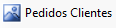
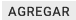
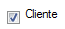
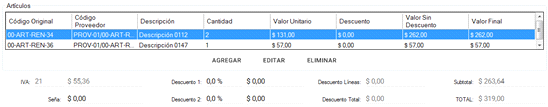
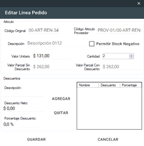
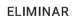

1. Debe hacer clic en el botón de la pantalla principal.
2. Una vez en la ventana de Pedido de Clientes, debe agregar aquellos artículos de
proveedor que desea pedir.
3. Para agregar artículos debe presionar el botón 
debajo de la grilla de "Artículos". Se le abrirá una nueva ventana donde puede
seleccionar los artículos.
4. Una vez agregados los artículos al pedido, debe definir los datos del cliente. En caso de
que el pedido corresponda a un cliente ya registrado, ya en la pantalla "Cierre Pedido de
Cliente" destilde la opción . Caso contrario continuar con el paso 6.
5. En la nueva ventana de Entidades, para buscar un cliente, lo debe realizar la misma
manera que en ModificarCliente. 6. Usted debe completar los datos del cliente dentro de las solapas .
7. Una vez completados los datos anteriores, puede corroborar los datos del pedido en . Si desea modificar alguna de las líneas, debe seleccionarla y presionar el botón y visualizará la siguiente ventana para modificarla: 
Si desea eliminarla, seleccione la línea y haga clic en el botón .
8.Ya finalizada la revisión de la información de la Venta, puede , o
dicho pedido con los botones correspondientes a cada
acción. En caso de
que se cancele la operación, se debe seleccionar el botón .
Topic: Puede corroborar los datos de los proveedores en las diferentes solapas. En caso
de querer abandonar el pedido en cualquier momento, debe hacer clic en el botón .